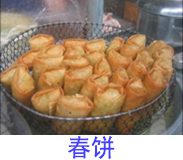
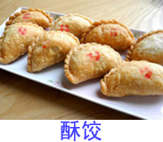

2017年11月26日
星期日
潮州 多云
14℃~21℃
<< 设为主页


红桃粿又名红曲桃，是广东潮汕著名的小吃，取桃果造型而得名，桃果象征长寿，故制桃粿正反映祈福祈寿的愿望，红桃粿、酵粿做完后，要放在祖宗灵位前祭拜，红桃粿属于精品主食，主要食材是大米、白面、糯米，口味是香，工艺是蒸。
红桃粿的馅有两种，一种是用绿豆去皮煮熟加调料做的，一种是用糯米做的。我们大多都是用糯米做，先把香菇、猪肉、虾米、蒜苗切碎，花生去壳剥皮，放在炒锅炒熟；糯米煮熟后用炒锅和着调料炒成一锅糯米饭。在一堆做好的皮揪出一小团，捏成一个薄薄圆圆的小碗，盛进糯米饭，再团成一团，用粿印印出来，上蒸笼蒸熟即可，也可在吃前略微用油煎香。
虽然制作红桃粿程序繁复，但一般潮州家庭妇女都能掌握这类食品工艺。潮州民间习俗，凡时年八节，几乎家家户户都要做红桃粿。祭拜的供品品种虽很多，但红桃粿是其中不可缺少的。
鼠曲粿(guǒ）也称茨壳粿（官方名称“鼠粬粿”），东潮汕地区的传统小食之一，属潮汕菜系广，潮汕民间年节祭祖一般都会有鼠曲粿。主要食材有鼠粬粿、糯米粉、猪油、馅料等。凡是提到潮汕小食，都不能不提到“鼠曲粿”，这大概是因为“鼠曲粿”在潮汕小吃中历史最为悠久，最具潮汕风味，最为大众化的原因吧。
鼠曲粿的制作是取田埂野生的“鼠曲粿(”熬成汤汁，调入猪油及糯米粉制成粿皮，包上豆沙或糯米、花生仁、虾仁、猪肉调成的馅料，咸甜随意，再用圆形或桃形印模压印成形，放新鲜竹叶上或香蕉树的叶子上面，然后上锅蒸熟，这也是鼠壳粿不同与其他粿的一点。
由于潮汕鼠曲粿取用天然鼠曲草，鼠曲草地上部分入药，性平，味甘，功能祛痰止咳，主治咳嗽痰多、气喘等症。鼠曲粿颜色深绿，柔软香甜，散发着天然鼠曲草的清香，因而现在也为潮菜餐桌常见之小食佳品。
潮州地区历来人多地少，“丰年不足三月粮”，加上经常发生自然灾害（台风高发区），因生活所迫，所以漂洋过海谋生，成为潮州人的传统习俗。在“红头船”时代，出洋的人随身所带“三件宝”：几件旧衣服、一罐淡水（或冬瓜）、几块甜粿。那时出洋的人乘坐“红头船”（早期在澄海樟林港，后期在汕头港）。“红头船”是木质帆船无机械作动力，只能利用风帆，顺着潮水和风势行驶，有时遇到气象不好，在海上漂流，安全无保障，多久才到目的地，也是未知数。所以带上甜粿，对保持生命较有安全感。
然而，蒸甜粿这一事，在贫苦人眼里，认为是件难办的事，也是不得已的事，因为要蒸制一笼甜粿，至少需要10斤以上的糯米粉和数斤白糖，要用旺火蒸上10几个小时不等，这对于三餐难饱的穷人来说，是很难办到的。但为了出洋谋生需要，再穷也得将甜粿蒸制出来，所以才有“无可奈何蒸甜粿”这一俗话的出处，它表达了那时穷人出洋谋生的悲苦心情，是旧社会劳动人民穷困生活的写照。现在潮州城乡年终节首仍有蒸甜粿的习俗，但意义已经大不一样了，“甜粿”就是其中必不可少一种拜神祭品。它类似年糕，呈蜡黄色，软韧油滑，不粘齿颚，香甜可口。
朴树树叶有消食、去积、和胃功效。春天到，新芽发，潮州民众便采摘朴树的嫩叶，捣汁和入米粉中，制成别具风味的潮州朴枳粿。浅绿色的朴枳粿，深得潮州人家的喜爱。
清明前后，朴枳树萌发新叶，民间有采嫩叶制粿的风俗，朴籽棵是采摘朴籽叶和果实（俗称朴帜）捣烂，与大米一起磨成粉末，过筛出粉精。朴籽树为落叶乔木，叶子卵形或长椭圆形，果实圆，状如绿豆大点，味清甜，无毒，有消痰下气之效。加工制作时将米粉添加白砂糖及发酵粉。加入适量水份搅拌均匀充分发酵，然后装入陶制桃形棵印或梅花形棵印。放置于蒸笼里（炊具）蒸熟。喷喷清香的裸品呈浅绿色，就成为质优味香色美的朴籽棵。
据传昔年元兵于清明前人侵潮州，杀戳掠夺，民不聊生，被迫无奈而避人山林之中，饥不择食，只好采摘朴籽叶，果籽充饥，后人为永记深仇大恨，故有“清明食叶”民谚。潮人世代相传，清明节加工蒸制“朴籽棵”吃的风俗，沿袭至今。
韭菜是潮州地区盛产的蔬菜之一，民间有“三六九韭菜”的说法，即每年农历三月、六月、九月都出产韭菜。潮州人认为韭菜有温中下气、补肾益阳、调和脏腑的作用，因此都很喜欢吃韭菜，而以韭菜为馅的韭菜粿，则和笋粿一样，都是人们喜爱的潮州小食。其风味独特，味道香美，叫人吃后口齿留香，难于忘怀。
韭菜粿的样子看起来像是一个大饺子，其实之所以叫做“粿”是由于它的粿皮与普通的饺子皮不同。韭菜粿皮的制作有两种：一种是选用上等的白米碾成粉，再与水一起调和，或者是用粿条渗米粉，用力搅拌，揉搓，使米粉与水或粿条与米粉渗透均匀，便可作成雪白的粿皮料；另一种是用煮沸的开水同淀粉一起调和，反复搅拌，用力揉搓，使淀粉与开水渗透均衡，便可做成晶莹透亮的粿皮料。这两种粿皮料渗入的水或开水均要恰到好处，达到既不沾手又不松散，揉搓时有弹力的手感，方能做成皮薄馅厚的，蒸熟又不破裂的韭菜粿。
菜头粿即萝卜糕，但潮州的菜头粿和外地的萝卜糕，在做法及风味上都有明显差异，每逢过年时节，各家各户都有蒸制。
菜头粿不单只用萝卜做为原料，还有芹菜、蒜花、花生仁、胡椒粉等，它的特色是突出菜头（萝卜）的鲜甜味，故在制作菜头粿时，菜头的比例较大，且在刨丝剁碎时流出的菜汁，也要求倒入米浆中。吃菜头粿时要先切成小块，用油煎成金黄色，吃起来外皮酥脆，内里柔软香甜。
而作为一味潮州小吃，无需等到逢年过节，你都能在街市市场中找到它的身影：既是喝早茶时的点心，又是吃宵夜时的美味。蒸制好的萝卜糕，再用油煎到两面金黄，蘸辣椒酱食用，外酥里嫩，萝卜的清香扑鼻，齿颊留香！
潮州盛产芋，芋又称芋艿，据说原产于东印度和马来亚等地，口感细软，绵甜香糯，营养价值近似于土豆，又不含龙葵素，易于消化而不会引起中毒，是一种很好的碱性食物。芋的种类很多，有青芋、签芋、白芋、九面芋、紫芋等十多种。最有名的要算是葛洲芋、蜈田芋、横洋芋、东寮芋。
芋头的营养价值有很多，用芋头作为原料的菜肴也有很多，通过炒、煮、焖、蒸、炸等烹调手法，可做成反砂芋、蜜浸芋、芋头粿、芋头糕、芋头饼、鱼头芋等十多道“芋菜”。
芋头粿是潮州粿品之一；它是用芋头擦成丝，加调料以及米浆蒸好切块，再经过油煎制成的一种食品，皮呈金黄色，外酥香，内软嫩，味美适口，是潮州人早餐和点心不可或缺的一道小吃。
在潮州，很多的小吃都叫做“粿”，如粿条、粿汁、红桃粿等等。粿，按辞书解释，是一种米食，所以一般叫做粿的材料里都离不开大米这种原料，但无米粿即是无米，到底是怎么一回事呢？原来，潮州自古人多地少，是个严重的缺粮区。为填饱肚子，潮州人想尽办法，“无米粿”就是心灵手巧的潮州妇女变幻出来的“无米之炊”了！
无米粿的皮是番薯粉做的。番薯自明代万历年间由福建陈姓人偷偷从菲律宾传入之后，随闽南人入粤，迅速传遍潮州大地，成为潮人的又一项主食。番薯吃不完了，便磨粉。薯头可以养猪，薯粉作副食及调料。著名的潮州蚝烙，夏天的“清心丸”甜汤、薯粉糕等，都以薯粉作原料。无米粿的棵皮，更纯粹是薯粉做的。
无米粿的馅多用蔬菜杂粮来做。咸的是马铃薯、芋头或竹笋切成小粒，加沙茶或咖喱及盐、味精少量炒熟。或大豆炊熟，加精盐、胡椒粉少量研细。甜的馅可用芋泥或豆沙。像做小笼包一样，蒸熟即可食用。包绿豆、芋泥、豆沙的，俗称蟹饺，多用作宴席的点心，加热即可上桌。放在油里用细火慢滚，整个玲珑剔透，俗称水晶包，是有名小吃。那一类包菜馅的，是家常的点心，多用油在锅里煎，使其透明微带赤，十分可口，是有名的美味小吃。
走在街头，总有几个小贩推着三轮车叫卖。上面摆着炉火锅，锅内装着热乎乎的，切成丁状的的菜脯和蒜蓉，旁边整齐地摆放着像小碟子状洁白的粿皮。面对闻名来尝的旅客们，阿姨娴熟地将菜脯粒放在蒸好的粿皮中间，再放进外卖盒里。微笑盈盈地递给客人，不忘说：“这可是潮州的名小吃啊，来这玩呀，一定要尝尝这味道”。
咸水粿又名水粿，是一款历史悠久的潮州传统小食，相传在潮州流传至今已有几百年的时间。味道清爽，价钱便宜，广受老百姓喜爱。
“咸水粿”外观是一个由米浆做成的如同小碟子的粿皮，中间是盛放着热的菜脯干，粿皮无味但有嚼劲，配上菜脯干的香甜和芳咸，成为一道具有潮州特色的民间小吃。有的也可以加上辣椒酱或者甜浆，使得咸水粿味道更重，更美味。
“咸水粿”一般是以小吃摊点的形式出卖，摊主先把粿皮蒸好备用，而菜脯干切成丁，加入蒜蓉，用小炉子微热，现作现卖。
春饼作为潮州传统名小食，是由潮州古代民间小食演变过来的。清代以前，在潮州大街小巷盛行着一种小食——薄饼卷炸虾，即用薄饼皮卷着炸香的小虾，醮着甜酱吃，这种小食主要是路边的小摊卖给小孩吃。到了清代末年，这种小食的馅由炸虾改进为菜头丁（萝卜丁）加猪肉粒。到了1911年，潮州名店胡荣泉的创始人胡荣顺、胡江泉两兄弟在此基础上，又把这种小食改进为一直流传到今天的潮州春饼。
潮州春饼，咬一口，满城春意，便在这酥脆之间。即便在炎热的夏天，仍能感觉到满满的春味融入唇齿，骨子间暖暖的春意悄然涌动。
潮州春饼，形状呈长方形，金黄美观，外酥里嫩，味浓香郁，春饼沿古意至今，里面内陷主要是青韭、香芹等新鲜时令菜，再佐以肉丝、香菇碎、肉碎、豆腐丝等合炒成盘，小编建议也可酌量加香菇、鸡丝等原料，因人而异，随意搭配。
“猪脚圈”虽属于潮州地区的一款特色粿品，但与其它粿类不同，以前人们一般都没有将其当作粿类的特色小食来看待，而是将其用作佐餐特别是早餐时的“物配”。因此，过去不论在农村还是在城市，均能见到专门制炸“猪脚圈”的摊档或小食店。
炸“猪脚圈”时，首先要将主要原料调和好，即用淀粉（也有少数人用粳米粉或面粉）加水调和成粉浆，里面加入适量的芋头丝、黄豆仁（或红豆、荷兰豆）和葱花、五香粉、食用盐等佐料。配好的佐料放在专门的圆形器皿哩，再放入热油里炸，。“猪脚圈”炸成型后，要将其从圆柱形器皿里倒脱出来再炸。炸“猪脚圈”，就是按照这样的方法，用一个个器皿盛入原料，再放入油锅里炸，反复循环，直至炸完为止。
炸好的“猪脚圈”呈金黄色，色泽十分惹人喜爱，有一股香喷喷的诱人香味，叫人馋涎欲滴，吃上一口，顿觉香脆可口，味道甚佳，吃后更是齿颊留香，回味无穷。“猪脚圈”既可作为一种美食来品尝，还可作为用来送饭的“物配”，真是一举两得。
卷煎，又名灌煎，是潮州小食之一。卷煎这一小食的名称，据说是取自外形及烹制方法而得名的，因这一小食制成后是一长卷形，而有些人在食用前也下锅略煎，故名为卷煎。
卷煎里面包有糯米、虾米、五花肉碎、花生仁、芋丝、香菇丝等等配料，还要加入少许芹菜碎、味精、胡椒粉等调料。值得一提的是卷煎那层黄色而透明的皮，那是用腐皮制作而成的，把搅拌均匀的糯米饭放在腐皮上卷成条状长卷，放到蒸笼上蒸一蒸，香喷喷的卷煎就可出炉了。如果你想要吃到比较香脆烫口的卷煎，那可以把卷煎切成小块，放入锅中煎炸。
潮州的卷煎，沾上独制的甜酱油蘸汁，卷煎的香味与甜酱油相融合，形成独一无二的潮州风味。
炒糕粿，是潮州一种街头巷尾的民间小食，它特色的Q口感，会让你对它停不了口。如果你认为只有泰国菜才会放咖喱，那你就错了，潮州的炒糕粿就是咖喱炒的，炒好后先装盘，再把香菇、虾米、鸡蛋、猪肉炒香勾芡，淋在炒好的粿块上。
炒糕粿看起来简单，其实是由30到50层的米粉叠起来的。糕粿是分开一层一层的米粉摊在桌面般大的圆竹匾中蒸的，一层快熟时立即倒上第二层米浆继续蒸，手巧的可以叠加到50层。把蒸熟的粿置放到第二天，让其变硬，要炒时先得把粿切成三角形的小块。入口滑溜中带点结实，米味活泼泼地浓得化不开。
地道的炒糕粿摊档少不了就是那口直径快达一米的超大平底锅，就是炒糕粿的特制炊具。生意好时，你会看到满满一锅金灿灿。蛋香四溢，赶紧叫上一盘品尝。传统的潮式炒糕粿，一般少不了就是鸡蛋的加入，或搭配香葱少许，或搭配当地芥蓝菜。如果你觉得这样还不够，那就再添加点瘦肉或者牛肉，那就是满满的幸福感了。在调料上，自然要来点特制鱼露，鲜香诱人。
潮州地区盛产水果，人们也擅于将各类时令水果加工腌制成为风味独特的各种开胃零食，说起潮州人对水果的腌制，那应该是从凉果说起，潮州的凉果制作历史悠久，至今有过百年历史，潮州的庵埠镇也是生产凉果的专业镇。
如果你喜欢吃酸甜的腌制凉果，那今天小编就为你推荐一款潮州小食，新鲜的腌制水果，叫“甘草水果”。甘草是凉果腌制品种的，一种加工原料之一，但是在新鲜的水果腌制中，它确是主角，微甜的甘草香，腌制新鲜的水果，颜色微黄，口感酸甜，而且这款小食的水果必须都是新鲜的，所以微甜的甘草香配上清甜的水果香，那真是绝配，即开胃又爽口。
这种小食，在潮州街头巷尾都可以买到，常见的甘草水果有草莓、青芒果、杨桃、番石榴、桃子、李子、梨等潮州时令水果，它除了好吃之后，它还有帮助消化，止渴生津，解毒祛痰，清燥润肺，减轻咳嗽的功效。因为甘草本身就是一种中草药，多生长在干旱、半干旱的荒漠草原、沙漠边缘和黄土丘陵地带。功能主治清热解毒，祛痰止咳、脘腹等。
肠粉的特别，让它毫无悬念当选潮州小吃首位，他的特别之处在于它已经完全融入潮州人的生活当中了，男女老少通吃，不论大街小巷，到处都可见到摆卖肠粉的小食摊。说起肠粉，据说潮州肠粉是从广州那边传过来的，但潮州肠粉融进了潮州民间口味，在制作手艺和用料上改用潮州地区的原料，制作出来的肠粉也赋予了潮州的风味。
说起肠粉，乳白色柔软的米浆皮，基本上决定了整盘肠粉的口感。滑滑的米浆皮上，打上一个鸡蛋，撒上几把白菜丝或竹笋丝、猪肉末、葱花、外加再撒上潮州土特产菜脯粒，淋上潮州人喜爱的花生酱，撒上几颗葱绿的香菜，一盘秀色可餐的肠粉就大功告成。
与广式肠粉不同，潮州肠粉所用的酱并非耗油酱油，而是精心搅拌的浓浓花生酱。随着时代在进步，肠粉也在不断的创新，如今，你可以随处吃到美味的耗肠粉，虾肠粉，牛肉肠粉，肠粉的配菜也越来越多，有香菜，有豆芽，有笋等等等等，然后最传统最地道的还是香菜猪肉肠粉。
潮州的粿条卷，馅料充足，将竹笋、白萝卜、芋粒、香菇丝、猪肉碎等爆炒，调上调味料，根据个人口味将这些准备好的馅料杂烩混合，然后用薄如蝉翼的乳白色粿条皮卷成一卷卷，最后在香喷喷的粿条卷上面淋上几勺芝麻油，撒上一勺葱猪朥，一盘秀色可餐的粿条卷便诞生了。
粿条卷起源于潮州的登塘镇三乡村一带，所以也有人也把三乡村称之为“粿条村”。粿条卷的做法首先要从制作粿条皮开始，当地人做粿条皮是相当讲究的，首先要选用质量较好的大米，大米的色泽也必须要白而亮，然后用水浸泡三个小时左右，淘净米后就开始磨浆了，浆必须磨得透，磨得细腻，不得有丝毫粗糙感，以免影响粿条皮的口感，米浆磨好后将其倒入特制的器皿放入蒸箱蒸熟，这时粿条皮就算是完成了。蒸熟的粿条皮再卷上香喷喷的馅料，接着蘸上少许香油，芝麻就成了老少咸宜的粿条卷了。
牛杂粿条，顾名思义，这就是用粿条和牛杂煮成的汤粿条了。牛杂呢就不向外面（潮州以外的地方）一样，潮州的牛杂有：牛肉丸、牛筋丸、牛百叶、牛心、牛肠、牛筋......总之就一个字：杂！只要是牛身上可以吃的都有。可能有点对不住牛先生，但是加上一小碟沙茶酱和辣椒酱，这确实是一个道可口的粿条汤。
住在潮州城里的朋友没有不知道的，最有名的牛杂粿条就在：西湖正门往西30米左右，正对着湖心亭，叫镇记牛杂店。
吃过粿条的人都知道，好不好吃主要就看它的汤水。只闻用牛大骨熬出的浓汤飘出来的肉香都是一种享受，将粿条放锅里一滚，捞上，加上用料十足的牛杂，烫上胖墩墩的豆芽（也是潮州一绝，其它地方的豆芽都是经过瘦身的，明显的营养不良），抓一大把南姜末放上面，再给你端上一小碟辣椒酱。
潮州粿汁，原是潮州农村作为点心解饥的米制农家小吃。其做法是：先在鼎中放水，煮开后将调好的米浆浇在鼎边四周，让米浆煎熟后铲下，并调入潮州调味品后即成。店铺做的潮州粿汁，要放入上顶潮州调味品，再加上卤味，如卤猪肉、卤猪肠等。
现在的潮州粿汁，一般都是预制好的米浆做成的。其做法是：1、在鼎中适量的水煮沸，和入适量尖米粉，调成稀糊状，放入预制好的米浆块；2、煮熟后，放入调味品，如蒜头翃、鱼露、油、味精、葱珠等； 3、上碗后放入卤料即成。
粿汁是潮州人早餐和下午茶的首选，它香热适口，回味无穷，且价格不高，老少咸宜。
潮州人的“烙”其实就是“煎”的意思。而蚝烙可以算是游客们来到潮州必要吃上一次的潮州小食了。蚝烙的做法看上去很简单，将地瓜粉溶于水中，拌入葱花和蚝，倒入热满猪油的平底锅煎煮再下蛋花，煎至上下两面酥脆并呈金黄色，盛盘即可。可是要把简单的蚝烙做得好吃，可就一点都不简单。特别是正宗潮州蚝烙的用料可不是哪里都能拿得到的，潮州人做蚝烙跟其他地方的人不同，使用的是潮州地区特产的地瓜粉，这样做出来的蚝烙才会更香更好吃。
虽然蚝烙看上去生生的，但可能也因为这样，一口蚝烙咬下去，里面的蚝并不会显老，而是又嫩又滑。配上地瓜粉QQ的口感，真的让人深深的体会到了一次外脆里嫩的感觉，再蘸上特制的鱼露配上芫荽叶，别有一番滋味。咸香适度，难怪那么多人会慕名而来。
但是蚝烙始终是猪油煎的东西，吃多了还是会腻的。这个时候配上含鱼丸和鱼饺的清汤可以称得上完美。潮州不比外地，做鱼丸和鱼饺十分讲究，基本上鱼刚捕上来，就会马不停蹄地送入加工厂，制成鱼丸和鱼饺。再将其滚煮熟透后放入提味的特制爆香过的蒜末、胡椒以及我们潮州人最爱的香菜，清甜又解腻。鱼丸咬下去才会感觉弹牙爽口，真是一大享受。
书册糕，又名云片糕、炖糕。之所以称书册糕，是因为这种糕点一片片紧紧相贴，形似一小本装订成册的书而得名。书册糕清甜松爽、老少咸宜，尤其适宜婴幼儿喂食，有补中健脾的功效。之所以叫云片糕，是因一片片白色的糕片如白云；而称之为炖糕，就在于一个“炖”字，因为在制作过程中，有了下锅隔水炖这道工序，所以称为炖糕。据说潮汕书册糕较出名的是龙湖炖糕、万源斋云片糕。
龙湖炖糕是潮州市龙湖镇出产的传统名糕点，以其洁白细腻、清甜爽口的特点而深受人们的喜爱。相传，龙湖炖糕是昔时一名师傅来龙湖客居开铺做饼食传授下来的，至今有400年的历史。在龙湖镇，“拱合”是制作炖糕的老字号招牌，现今以“拱合”品牌出现的饼食店多达几十家，而其中最有名的应推“新拱合瑞源”饼食店，店主为黄仲慈。
龙湖炖糕以上好糯米和白糖为主料。糯米炒熟碾磨成糕粉；白砂糖加水用中小火煮成糖浆，再加入适量猪油、麦芽糖，用力搅拌，以免糖浆板结。接着，将糖浆和糕粉按比例（最好是1：1.3）混和碾压成块，再下锅隔水炖两分钟，最后是切片成型。每块炖糕如果长为12厘米的话，那么它至少由60片薄糕片组成。因为每一薄糕片的厚度不会超过2毫米。
潮州豆方，是潮州闻名遐迩的特产之一。豆方中粘牙的麦芽糖融合了花生仁浓浓的香脆，传统的打工捶打让豆方更加松脆可口。咬一口，豆板脆脆的响声在耳边环绕，花生浓浓的味道在口中缠绵，和花生融在一起的麦芽糖在口中纠结着……
豆方实际上是花生糖，因为潮州人管花生叫做“地豆”，所以就把做成方形的花生糖叫做“豆方”。而切成条的就叫“豆条”或者“豆枝”。有些地方还把花生糖做成桃子状，叫“地豆桃”，吃的时候要啃，不然就得用刀砍小了吃。
潮州人吃豆方有两个最传统的日子，一个是中秋节前后，豆方是中秋祭拜月亮娘娘必备的祭品之一；另一个是结婚的时候，也要准备豆方供客人享用并作为礼物带走。潮州地区有一个习俗，谁家娶媳妇的时候，都要分送邻居豆条和朥饼，潮州话称为“食知”、“食甜”，也就是让邻居们知道自家的喜事。
潮州龙湖酥糖，是龙湖的传统名产之一，历来以其酥脆香甜无粕而闻名，成为居家食用及送礼佳品。龙湖酥糖清香不腻，入口即化，早已享誉海内外。
据当地资料，传统产品龙湖酥糖已有近百年的生产历史，首创为龙湖许崇记饼家。龙湖酥糖其主要原料为白糖、花生仁、猪朥、麦生等。制作时先将糖加水煮沸，再加入猪朥、麦生等，当火候适中时，将糖浆倒入盛器进行隔水降温，至糖浆成糯米糍状时，迅速上架拉酥，拉酥时须趁热反复拉扯，酥糖方能香脆可口。最后，将加热的熟花生仁压入酥糖，开条切成小块。
近些年来，随着人民生活水平的提高，人们对甜腻食品虽然有所厌倦，但是龙湖酥糖仍然以其独特的风味受到人们的欢迎，人们闲暇品茶时，它成为桌上精美饼点，逢年过节，它又是人们走亲访友的送礼佳品。海内外乡亲回到故里，先要品尝的饼点就是龙湖酥糖，离开时，总忘不了带几盒地道的龙糊酥糖让海外的子孙后辈品尝。前些年，有一位在台湾的乡亲，专程赶来龙湖认亲，凭的是他父亲“家乡出产龙湖酥糖”的记忆，尽管最终寻亲未果，但足见海内外乡亲对家乡的一往情深。
临近春节，年味渐浓。潮州人历来重视春节，记得以前家里的大人们从腊月就开始忙活，置办年货、打扫卫生、做粿品和准备各类供品、小吃等，这样的传统一直延续至今。印象最深刻的是做酥饺，以前过年几乎家家户户都要做酥饺，虽然现在市面成品酥饺比较多，但还是有不少人沿袭传统自己动手做。做好的酥饺状如荷包，既好看又好吃，又有特别的意义，过年吃酥饺，期望来年荷包如酥饺一样又鼓又圆。
酥饺的工程有做馅、和面、擀饺子皮、包馅、做造型，要在饺子边缘折上称优美的褶纹，一颗酥饺才成形了，接下来的炸酥饺也是考验真本领的时候，关键要掌握好火候，炸至金黄色。炸好的酥饺一口咬下去，就咬到了馅，馅料里糖浆的甜、花生和芝麻的香让人满口留香。每家炸好酥饺后，最先要拿给长辈品尝，邻里之间、亲戚朋友再互送一些，剩下的留到春节待请客。正月里，各家各户的茶几上总摆着几盘酥饺，来访的亲友围坐茶几边，边喝工夫茶边吃酥饺，那气氛温馨和谐，每每想起这情景，心里便流淌着丝丝暖意。
朥字，潮州方言指猪油，顾名思义，朥饼就是用猪油掺面粉作皮包甜馅烤焙熟的饼。朥饼终年应市，但以中秋节上市为最合时，故被列作中秋月饼之佼佼者。中秋节品尝月饼是我们中华民族千百年来的习俗，不过潮州人却喜欢在中秋佳节之时，边品工夫茶，边品尝别有风味的潮州人称之为朥饼的本地月饼。朥饼以其馅料不同，而分别被称为绿豆沙朥饼、双烹朥饼、乌豆沙朥饼和水晶朥饼等。
潮州朥饼中的佼佼者，当属意溪大朥饼。意溪大朥饼最突出的特点是皮薄而均匀，馅精细滑润，入口香甜清爽，且凉喉适口，正是这些突出的优点，使其闻名粤东及东南亚一带。意溪大朥饼之所以有以上突出的风味特色，究其原因，主要有以下两点：一是用料讲究，主要原料猪油，一定要用潮州本地猪的猪朥来炸油，因为这样的猪油味道才极为芳香；二是制作精细，意溪大朥饼整个制作过程，都是以传统手工操作而成，工序十分繁杂，但每道工序都十分考究、精细。过去在潮州地区，有“意溪朥饼豆馅藏过年”的传说，便是指意溪朥饼的豆馅制成之后，必须装入陶坛中，埋藏于泥土中数月，才挖出制作成饼，正是因为这个原因，意溪大朥饼才有清爽凉喉的特点。